| Column | Simplified | Type | Source | Description | Missing |
|---|---|---|---|---|---|
revenue_weight |
Yes | INTEGER | pipeline | Revenue weight, the maximum permitted gross mass (kg): DVLA (same vehicle only), else the most common value of vehicles with the same make/model/birth year/fuel/engine size (variant), else of the same make/model/birth year/fuel (model_year_fuel); see revenue_weight_src | 30.25% |
revenue_weight_src |
No | VARCHAR | pipeline | Source of the matching harmonised column: dvsa or dvla (recorded), variant (same make/model/birth year/fuel/engine size) or model_year_fuel (same make/model/birth year/fuel) | 30.25% |
revenueWeight_DVLA |
No | INTEGER | DVLA (VES) | As returned by the DVLA Vehicle Enquiry Service | 69.51% |
mass_kg |
Yes | DOUBLE | RACF (pipeline link) | EU mass in running order (kg): fleet-weighted mean over the linked RACF rows with a plausible value. A value for the model, not a measurement of this car | 25.69% |
kerb_weight_kg |
Yes | DOUBLE | RACF (pipeline link) | RDW kerb mass (kg): fleet-weighted mean over the linked RACF rows with a plausible value. A value for the model, not a measurement of this car | 23.01% |
length_mm |
Yes | DOUBLE | RACF (pipeline link) | RDW length (mm): fleet-weighted mean over the linked RACF rows with a plausible value. A value for the model, not a measurement of this car | 49.22% |
width_mm |
Yes | DOUBLE | RACF (pipeline link) | RDW width (mm): fleet-weighted mean over the linked RACF rows with a plausible value. A value for the model, not a measurement of this car | 60.55% |
height_mm |
Yes | DOUBLE | RACF (pipeline link) | RDW height (mm): fleet-weighted mean over the linked RACF rows with a plausible value. A value for the model, not a measurement of this car | 39.84% |
wheelbase_mm |
Yes | DOUBLE | RACF (pipeline link) | Wheelbase (mm): fleet-weighted mean over the linked RACF rows with a plausible value. A value for the model, not a measurement of this car | 28.28% |
footprint_m2 |
Yes | DOUBLE | RACF (pipeline link) | EU footprint, wheelbase x track (m2): fleet-weighted mean over the linked RACF rows with a plausible value. A value for the model, not a measurement of this car | 28.93% |
29 Mass and size
29.1 Overview
These columns give the vehicle’s mass in kilograms and, for cars, the size of its model.
The revenue weight (the DVLA’s name for it) is the vehicle’s maximum permitted gross mass in kilograms, as the DVLA records it. It matters most for goods vehicles and buses, which are classed by mass.
revenue_weightis the harmonised revenue weight: the DVLA value where the VES record describes this vehicle, otherwise the most common value among vehicles of the same make, model, birth year, fuel and engine size, and failing that of the same make, model, birth year and fuel.revenue_weight_srcsays which (dvla,variantormodel_year_fuel).revenueWeight_DVLAis the value as supplied.
The backfill is described in the methodology, section 5.6.
For cars, the mass and dimensions of the car’s model are also linked from the RACF car fleet (Section 25.1.1). They are averages for the model, year and fuel, not measurements of the car, and are blank for vehicles that are not cars.
mass_kgis the EU mass in running order: the empty car with its fluids, a 90% full tank and a 75 kg driver.kerb_weight_kgis the Dutch RDW register’s kerb mass. Both are well below the revenue weight, which is the maximum permitted mass of the loaded car.length_mm,width_mmandheight_mmare the RDW dimensions,wheelbase_mmthe wheelbase, andfootprint_m2the EU footprint, the wheelbase times the track, in m².
29.2 Coverage
The revenue weight is the least complete of the DVLA attributes. The DVLA records it for only 30% of vehicles, even though a VES record was found for far more, and most of those with a value were first used since 2010 (Figure 29.1). The backfill raises coverage to 70%, but only to 47% for vehicles first used before 2000, as few similar vehicles of that age have a recorded value to copy.
Because most values are filled rather than recorded, check results that depend on mass against the recorded values only (revenue_weight_src = 'dvla'; Chapter 14).
The RACF columns are present only for cars whose model was linked and whose linked RACF rows have a plausible value. The EU mass and footprint and the RDW kerb mass are present for most cars: mass_kg for 74% of all vehicles. The RDW length and width are present for fewer (length_mm for 51%), as fewer models were matched to those fields of the register.
| Column | All vehicles | Before 2000 | 2000–09 | 2010–19 | 2020 on |
|---|---|---|---|---|---|
revenue_weight |
69.8% | 47.5% | 73.0% | 75.7% | 79.1% |
revenue_weight_src |
69.8% | 47.5% | 73.0% | 75.7% | 79.1% |
revenueWeight_DVLA |
30.5% | 6.3% | 12.7% | 51.3% | 53.8% |
mass_kg |
74.3% | 65.8% | 79.2% | 80.2% | 64.5% |
kerb_weight_kg |
77.0% | 75.8% | 81.1% | 80.3% | 64.7% |
length_mm |
50.8% | 24.1% | 47.3% | 64.6% | 63.3% |
width_mm |
39.5% | 9.7% | 19.2% | 66.6% | 62.3% |
height_mm |
60.2% | 26.4% | 63.6% | 76.6% | 63.4% |
wheelbase_mm |
71.7% | 63.0% | 78.3% | 80.0% | 54.6% |
footprint_m2 |
71.1% | 61.7% | 77.2% | 80.0% | 54.5% |
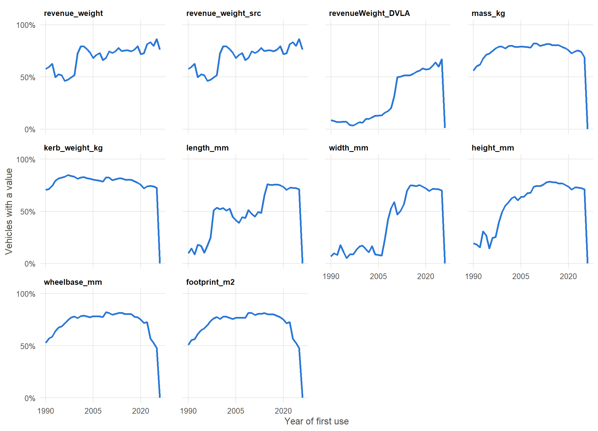
29.3 Values
How the values of each column change over time, by year of first use, from 1990. Numeric columns show the minimum, lower quartile (Q1), median, upper quartile (Q3) and maximum; other columns show the share of vehicles with each value, with the less common values grouped as All other values and missing values as Blank.
revenue_weight
Revenue weight, the maximum permitted gross mass (kg): DVLA (same vehicle only), else the most common value of vehicles with the same make/model/birth year/fuel/engine size (variant), else of the same make/model/birth year/fuel (model_year_fuel); see revenue_weight_src.
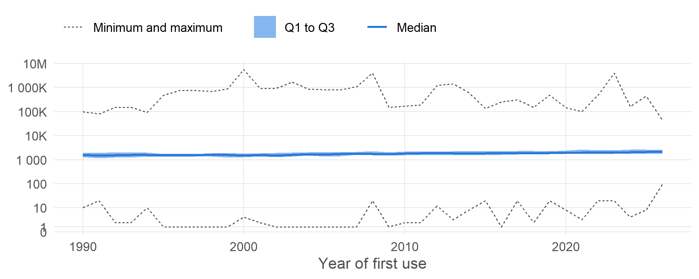
revenue_weight_src
Source of the matching harmonised column: dvsa or dvla (recorded), variant (same make/model/birth year/fuel/engine size) or model_year_fuel (same make/model/birth year/fuel).
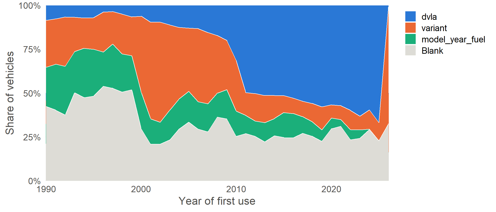
revenueWeight_DVLA
As returned by the DVLA Vehicle Enquiry Service.
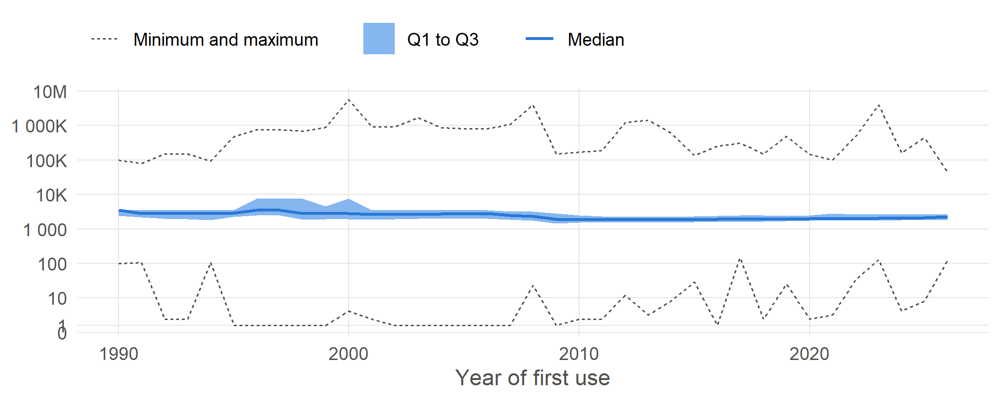
mass_kg
EU mass in running order (kg): fleet-weighted mean over the linked RACF rows with a plausible value. A value for the model, not a measurement of this car.
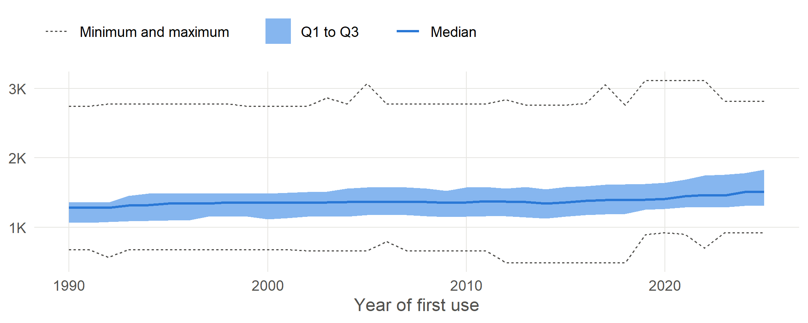
kerb_weight_kg
RDW kerb mass (kg): fleet-weighted mean over the linked RACF rows with a plausible value. A value for the model, not a measurement of this car.
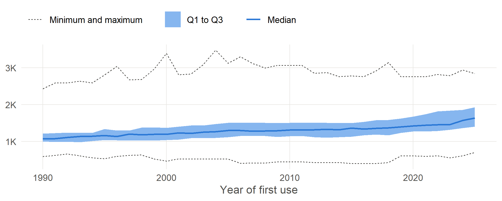
length_mm
RDW length (mm): fleet-weighted mean over the linked RACF rows with a plausible value. A value for the model, not a measurement of this car.
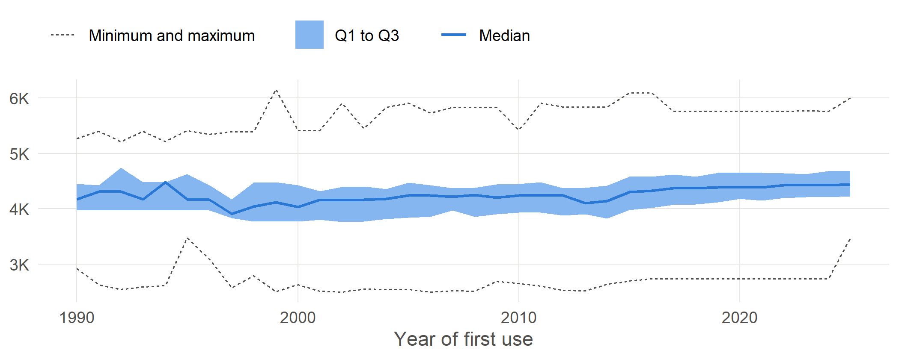
width_mm
RDW width (mm): fleet-weighted mean over the linked RACF rows with a plausible value. A value for the model, not a measurement of this car.
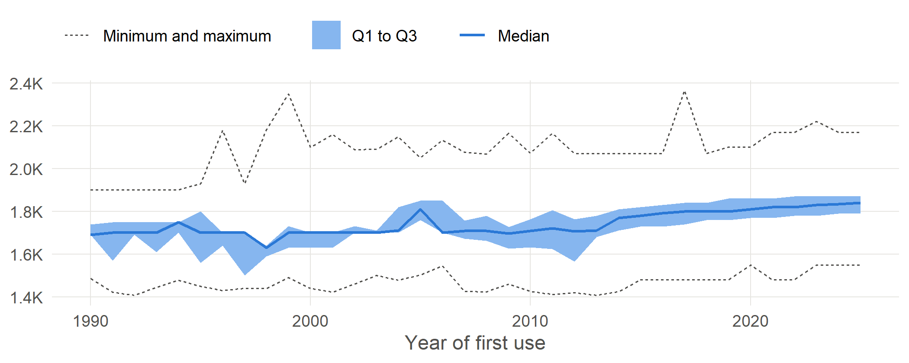
height_mm
RDW height (mm): fleet-weighted mean over the linked RACF rows with a plausible value. A value for the model, not a measurement of this car.
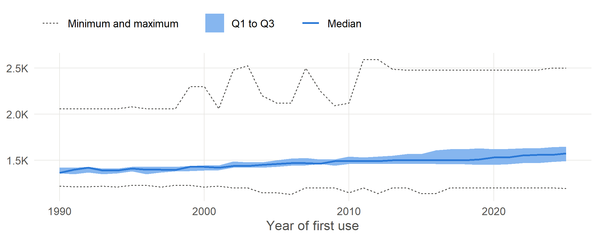
wheelbase_mm
Wheelbase (mm): fleet-weighted mean over the linked RACF rows with a plausible value. A value for the model, not a measurement of this car.
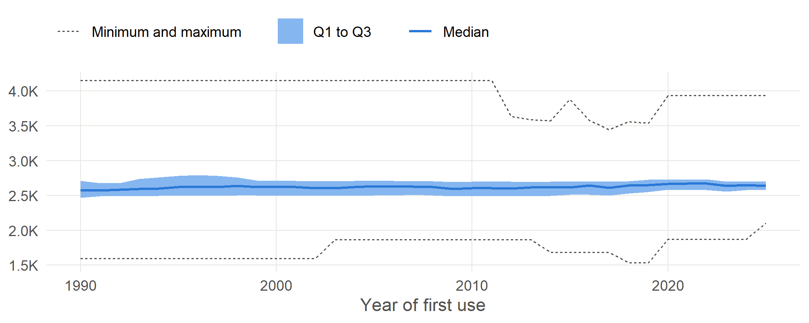
footprint_m2
EU footprint, wheelbase x track (m2): fleet-weighted mean over the linked RACF rows with a plausible value. A value for the model, not a measurement of this car.
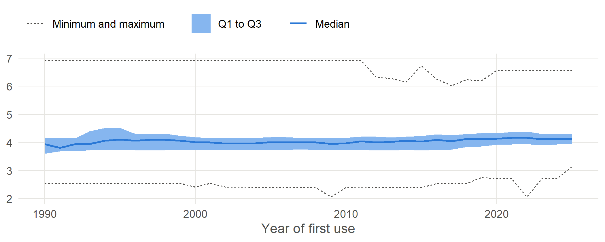